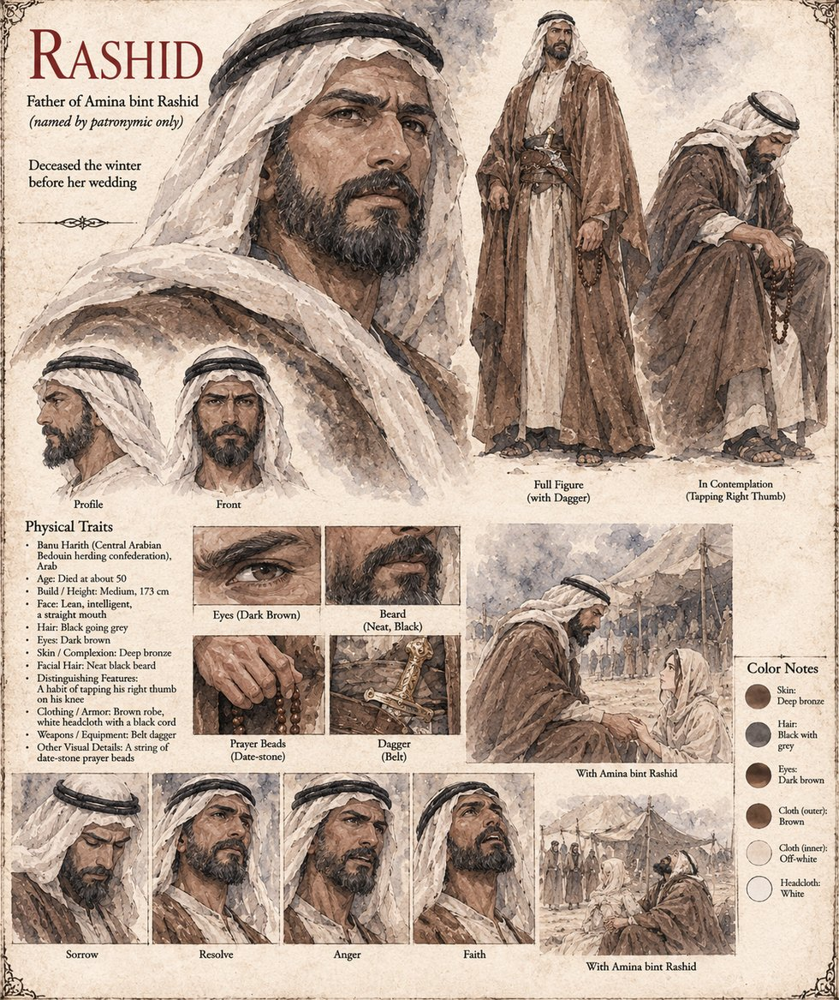

Rashid
Father of Amina bint Rashid, Banu Harith · named only by patronymic · died the winter before her wedding · about fifty at death by the sheet
The father of Amina, known to the manuscript only through the patronymic in her name. He dies the winter before her wedding. Her uncles then arrange the marriage to Malik, without asking her any question to which they expected an honest answer, and Sulayman ibn Ghanim, his brother, becomes the nearest thing to a father she has left. The manuscript gives him no more than the patronymic, the death and the relationship; he is named only in his daughter's name.
The sheet draws him medium-built and lean, with an intelligent face and a straight mouth, black hair going grey, a neat black beard and dark eyes, in a brown robe over white with a white headcloth held by a black cord, a belt dagger and a string of date-stone prayer beads; it gives him a habit of tapping his right thumb on his knee. Its expression panels run sorrow, resolve, anger and faith, and two scenes show him with Amina. The age of about fifty at death, the thumb-tapping and everything visual are the sheet's.